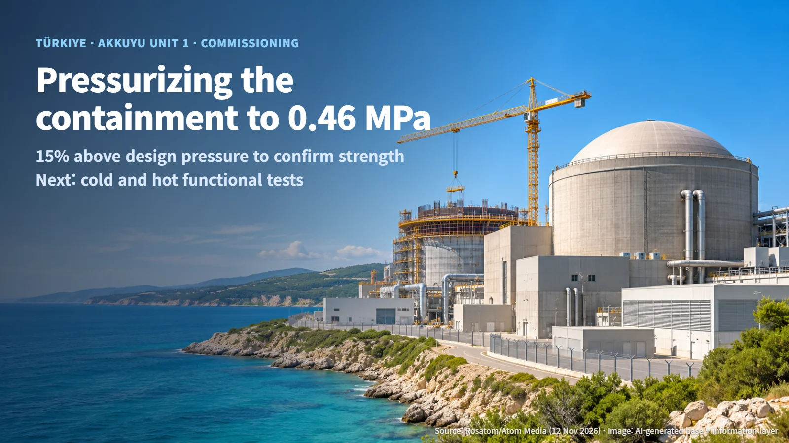
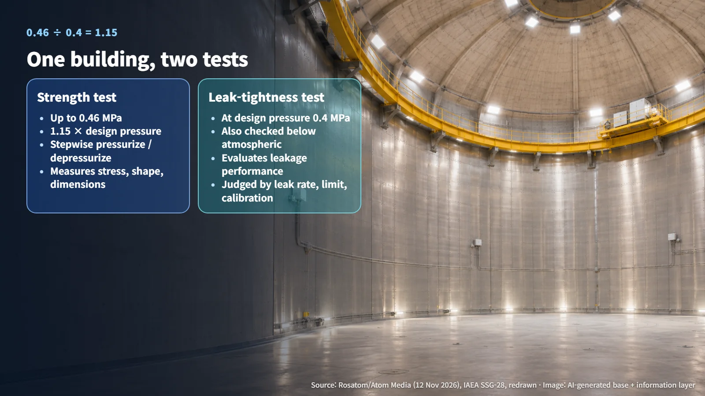

Türkiye · Akkuyu · Commissioning
Pressurizing a Reactor Building to 0.46 MPa: Akkuyu 1's Containment Tests and the Next Gate
Akkuyu Unit 1's inner containment was pressurized to 0.46 MPa, 15% above its 0.4 MPa design pressure. Cold and hot functional tests come next, while the operating licence review runs separately.
The most recognizable part of a nuclear power plant is the large concrete building with a domed roof. Many readers have wondered whether that building can really hold radioactive material inside during an accident, and who checks it. At Akkuyu Unit 1 in Türkiye, one of those checks has just been completed. This post walks through what the test measures and what still lies between a finished test and an operating reactor.
On 12 November 2026, Rosatom announced that it had completed strength and leak-tightness tests of the inner reactor building at Akkuyu Unit 1. The tests ran continuously for eight days. Akkuyu 1 is a VVER-1200, a Russian-designed pressurized water reactor, and the structure tested was its containment: the barrier that surrounds the main reactor equipment and limits the release of radioactive material to the outside. Inside, reinforced concrete and tendons (steel cables that pre-compress the concrete) carry the pressure load, while an outer structure is designed to cope with external events such as external impacts.

0.46 MPa and 0.4 MPa: What the Strength Test and the Leak Test Measure
The announcement contains two pressure figures. One is the maximum pressure of the strength test, 0.46 MPa. The other is the design pressure of 0.4 MPa, used for the leak-tightness evaluation. Design pressure is the internal pressure the building is designed to withstand in an accident.
A simple division shows how the two numbers relate:
> 0.46 MPa ÷ 0.4 MPa = 1.15 → a pressure 15% above the design pressure
In the strength test, air was pumped into the building step by step up to this above-design level. After the maximum was reached, pressure was released in stages while engineers observed how the structure responded. Throughout the test, they monitored stresses in the structure and changes in its shape and dimensions under load. It is similar to inflating a new car tire slightly above its rated pressure and watching whether the sidewall bulges or deforms.
The leak test asks a different question: how much does it leak? That is why the leak-tightness evaluation was carried out at the design pressure of 0.4 MPa, and why leak-tightness was also checked at pressures below atmospheric pressure. Side by side, the two tests look like this:
| Test | Pressure condition | Question asked | What is measured | |---|---|---|---| | Strength test | Up to 0.46 MPa, staged pressurization and depressurization | Does the structure hold? | Stress, changes in shape and dimensions | | Leak-tightness test | Design pressure 0.4 MPa, plus checks below atmospheric pressure | How much does it leak? | Leakage performance |
(Source: adapted from Rosatom / Atom Media announcement, 12 November 2026)
The same building was tested in the same eight-day window, yet the pressures and the measured quantities differ. The two results are therefore compiled and checked separately. A one-line "tests completed" announcement actually carries two separate report cards.

"Requirements Met" and the Evidence Behind It: Leakage Rates and Calibration Records
The operator stated that the results meet the design requirements for strength and leak-tightness. The announcement did not publish the measured leakage rate or the detailed acceptance criteria. So what kind of evidence stands behind the statement that the requirements were met?
The International Atomic Energy Agency's commissioning safety guide, SSG-28, recommends that acceptance criteria for tests account for measurement uncertainty and be linked to safety and design objectives. Every instrument has some error, so judging whether a measured value meets a criterion should include that error band. SSG-28 is international guidance; the specific acceptance criteria for Akkuyu 1 are set out in that unit's licence conditions and test procedures.
Placing what the announcement confirms next to the records used to reach a judgment gives this picture:
| Area | Confirmed in the announcement | Records used for the judgment | |---|---|---| | Strength | Staged pressurization and depressurization up to 0.46 MPa | Pressure history, stress and deformation measurements | | Leak-tightness | Checks at design pressure and below atmospheric pressure | Measured leakage rate, correction method, allowable value | | Instrumentation | International recommendation to confirm calibration status (SSG-28) | Instrument list, calibration certificates, validity periods |
(Source: adapted from the Rosatom / Atom Media announcement and IAEA SSG-28)
What has been made public is the test conditions and the conclusion. The measured values, allowable values and instrument reliability records that prove the conclusion in numbers sit in documents exchanged between the operator and the regulator. The core of the leak-tightness judgment is a single comparison, whether the measured leakage rate falls within the allowable value, and both of those numbers are on the evidence side of the table. If detailed results are published later, the leakage rate and its allowable value are the first items worth reading.
Commissioning Licence and Operating Licence: Two Licensing Tracks
Under which licence did this test take place? Türkiye's Nuclear Regulatory Authority (NDK) granted Akkuyu Unit 1 a commissioning permit by Decision 2023-90/4 on 21 November 2023. Its scope covers commissioning tests before fuel loading, under Article 18(4) of the relevant regulation. The containment strength and leak-tightness tests fall within that scope.
Loading fuel and actually running the reactor requires a separate operating licence. The operating licence application was submitted on 27 December 2024. After the supplementary documents were checked for adequacy, NDK's public record shows that review and assessment began on 15 June 2026. The application is currently under review.
Laying the two tracks on a timeline and measuring the gaps:
- Operating licence: applied 27 December 2024 → review started 15 June 2026. That works out to roughly one and a half years spent on supplementary documents and the adequacy check.
- Commissioning: permit granted 21 November 2023 → containment tests announced complete 12 November 2026. That works out to about three years.
These figures show that the two licences move in parallel. On site, tests within the commissioning permit proceed one by one, while the regulator reviews the operating licence documents at the same time. NDK reviews the technical documents submitted by the operator and, where necessary, inspects on-site activities and tests and evaluates the results. The operator holds prime responsibility for safety, and the regulator verifies the basis for it. NDK's public page has yet to post an individual acceptance document for the strength and leak-tightness tests or a decision to start functional testing, so the regulator's confirmation will appear in its future public record.
The Next Gate: Cold and Hot Functional Testing and System Turnover
Rosatom said the tests lay the groundwork for moving to the next commissioning stage: cold and hot functional testing. Functional tests run the systems connected to the reactor, such as piping, pumps and valves, under temperature and pressure conditions close to real operation to confirm that they work as designed. Fuel loading, first criticality (the moment a fission chain reaction first sustains itself) and commercial operation follow in sequence after functional testing.
Moving to the next test also has a threshold. IAEA SSG-28 lists prerequisites before a test starts: installation completion records, approved test procedures, prepared staff and instruments, a safe test configuration, and any required written authorization. It recommends starting subsequent tests only after confirming that the previous stage is complete and that predefined conditions are met.
A key concept here is system turnover. It is the process of documenting that installation and test results match the design intent, then handing the related package of records over to the operations side. Items left incomplete or unresolved during testing are tracked in a separate record, showing which item was closed, when, and on what basis. It resembles a move-in checklist where "needs repair" items are written down and crossed off one at a time.
For Akkuyu 1, three things are worth watching next: whether the detailed results of the strength and leak-tightness tests are published, the actual start of cold and hot functional testing, and progress in the operating licence review that has been under way since June 2026.
Eight days of filling a domed building with air is a quiet milestone, yet it is the gate where a plant's ability to contain radioactive material is confirmed in numbers. The next time a "tests completed" headline appears, it helps to ask at what pressure, what was measured, and which licences and tests still lie ahead.